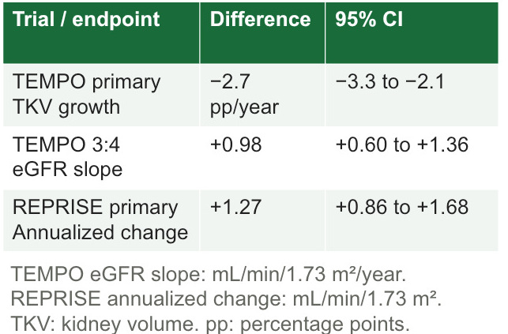

Understand the evidence behind a drug and indication.
DrugAdopt connects disease biology, pharmacology, clinical outcomes, and candidate biomarkers to their supporting sources.
We also run custom analyses and build agentic AI pipelines for preclinical and biomarker work.

Inside a DrugAdopt evidence package
Follow a finding all the way to its source.
This example examines tolvaptan in autosomal dominant polycystic kidney disease (ADPKD). Explore disease biology, adult trial outcomes, and conditional exposure models in three connected formats.
Selected renders from an October 2026 analysis of public evidence. Choose a highlight or open it larger to read the detail.
One finding, four connected views
TEMPO 3:4 kidney-volume growth
Tolvaptan versus placebo · selected adults · three years
−2.7percentage points / year95% CI −3.3 to −2.1
Report. Section 1.1.2 explains the −2.7 percentage-point annual growth contrast, trial eligibility, and the source's analysis population.
Open report page 6 ↗Inspect the Quarto and plotting code
These excerpts come from the retained analysis. The −2.7 estimate and its confidence interval are source-reported. The code plots the retained arm estimates and intervals.
Quarto figure source
orientation_efficacy_landscape.qmd · lines 14–23
```{python}
#| label: fig-tempo-tkv
#| fig-cap: "Annual total kidney volume (TKV) growth (%/year; point estimates and source-reported 95% confidence intervals) by randomized arm in TEMPO 3:4: adults aged 18–50 with baseline TKV ≥750 ml and estimated creatinine clearance ≥60 ml/min; three-year primary TKV endpoint, primary efficacy analysis N=1,307 of 1,445 randomized. Values from the TEMPO 3:4 publication (PMID 23121377), NCT00428948."
#| evidence: randomized_trial
#| sources: PMID 23121377, NCT00428948
import pandas as pd
import altair as alt
rows = pd.read_csv("raw/orientation/tempo_tkv.csv")
rows["axis_label"] = rows["arm"]Plotting calculation
plot_tempo_labels.py · lines 21–27
for y, row in enumerate(rows):
mean, lo, hi = (float(row[k]) for k in ('mean', 'ci_low', 'ci_high'))
ax.errorbar(mean, y, xerr=[[mean-lo], [hi-mean]], fmt='o',
color='#39718E', ms=7, capsize=4, lw=1.6)
ax.set(yticks=range(len(rows)), yticklabels=[r['arm'] for r in rows],
xlabel='Annual total kidney volume growth (%/year)',
ylabel='Treatment arm', xlim=(2, 6.4), ylim=(-.6, 1.6))The plot uses arm means of 2.8 and 5.5% per year with their own source-reported intervals. The adjusted between-group interval is retained separately in Parameters!L4:M4. Read-only excerpts from the retained analysis.
01 / The report
Read the science in context.
Disease biology, endpoints, and clinical results come together in an explanatory report. Study populations and model assumptions sit beside each finding.
- Study populations and endpoints
- Estimates with uncertainty
- Methods and model assumptions


Swipe or scroll across the excerpt, or open it larger.
Swipe or scroll across the excerpt, or open it larger.
Swipe or scroll across the excerpt, or open it larger.
02 / The slide deck
Bring the findings into focus.
The deck turns report findings into presentation highlights: V2 receptor biology, adult trial outcomes, treatment safety, and clearly labeled predictions.
- Mechanism and pharmacology
- Clinical outcomes and safety
- Measured results and predictions


Swipe or scroll across the excerpt, or open it larger.
Swipe or scroll across the excerpt, or open it larger.
Swipe or scroll across the excerpt, or open it larger.
Swipe or scroll across the excerpt, or open it larger.
03 / The workbook & records
Trace the number to its record.
The TEMPO kidney-volume contrast leads to a parameter ID, its units and confidence interval, and the original publication. The workbook connects those records with field definitions.
- Values, units, and stable IDs
- Publication links and access depth
- Retained code and field definitions


Swipe or scroll across the excerpt, or open it larger.
Swipe or scroll across the excerpt, or open it larger.
tempo_tkv_diff, row 4; full selected-range view includes the stable IDs.Swipe or scroll across the excerpt, or open it larger.
We are taking on a small number of pilot assets. Data you share for a pilot stays on our private cloud and is never sent to third-party model APIs. How your data is handled.
What a DrugAdopt report covers
- Clinical phenotype and endpoints
- Mechanism and biomarker biology
- Pharmacology and exposure
- Toxicology and therapeutic window
- IP and competitive intelligence
Modalities we work on
- Small-molecule inhibitors
- Antibody-drug conjugates
- Biologics
- Real-world data biomarkers